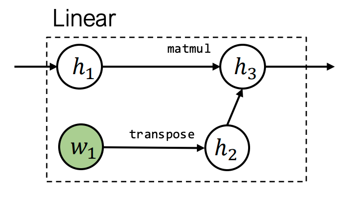
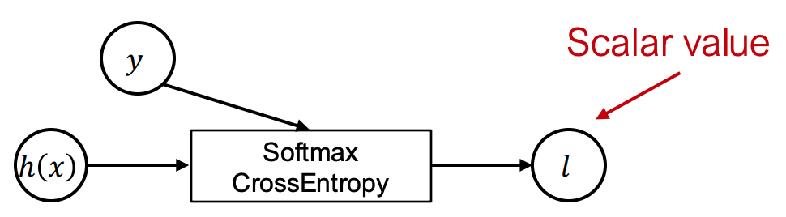
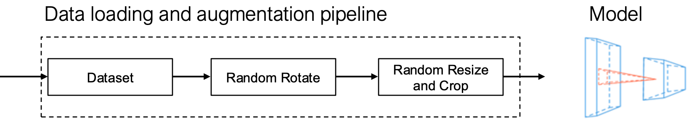
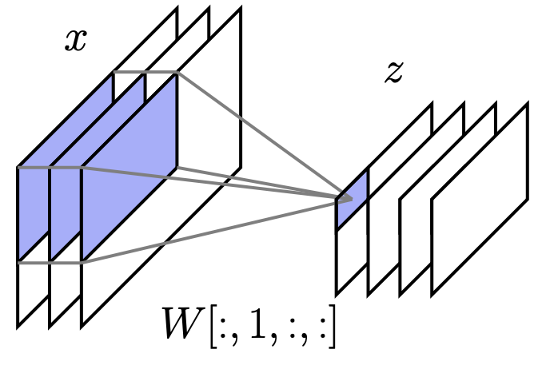
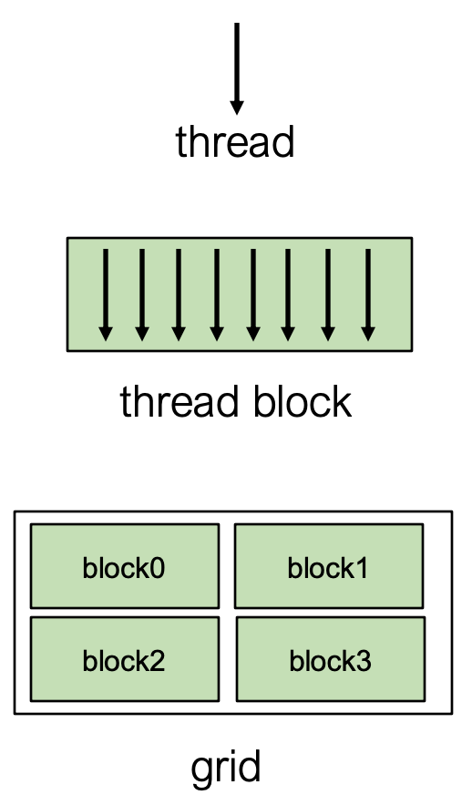
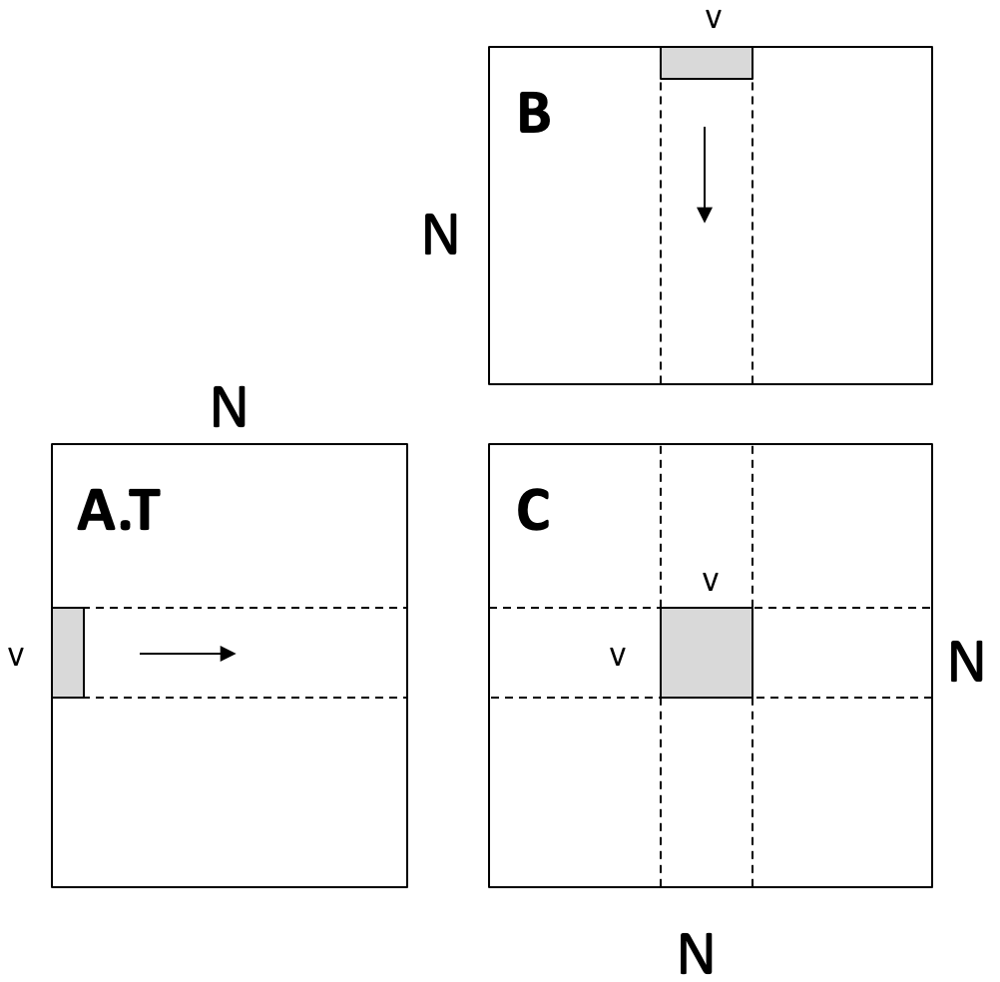
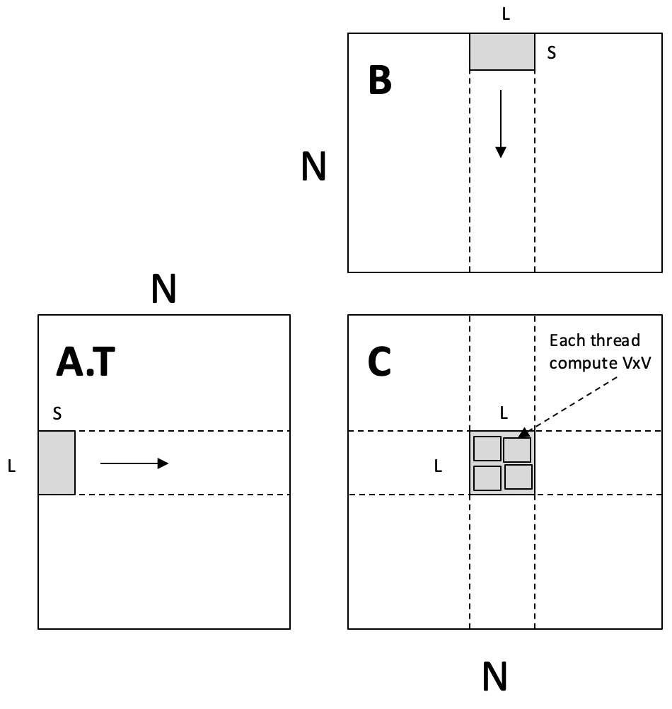

Course Notes
笔记内容由课程ppt+llm生成, 并进行一定修改
Lec2 机器学习回顾/Softmax回归¶
2.1 机器学习基础¶
数据驱动编程范式¶
- 传统编程困境：手工编写分类逻辑困难（如手写数字识别）
- 监督学习解决方案：
- 收集带标签的训练集 \({(x^{(i)}, y^{(i)})}_{i=1}^m\)
- 通过机器学习算法自动生成分类程序
机器学习三要素¶
- 假设类 (Hypothesis Class) : 参数化映射函数 \(h_\theta: \mathbb{R}^n \rightarrow \mathbb{R}^k\)，描述输入到输出的关系
- 损失函数 (Loss Function) : 量化模型预测效果：\(\ell(h(x), y) \rightarrow \mathbb{R}^+\)
- 优化方法 (Optimization Method) : 最小化经验风险\(\min_\theta \frac{1}{m}\sum_{i=1}^m \ell(h_\theta(x^{(i)}), y^{(i)})\)
2.2 Softmax回归示例¶
多类分类问题设定¶
- 输入空间: \(x^{(i)} \in \mathbb{R}^n\)（如MNIST图像 \(n=784\)）
- 输出空间: \(y^{(i)} \in \{1,...,k\}\) （如MNIST有 \(k=10\) 类）
- 训练集规模: \(m\) 个样本（如MNIST \(m=60,000\)）
线性假设函数¶
\(h_\theta(x) = \theta^T x\) 其中
- 参数矩阵 \(\theta \in \mathbb{R}^{n \times k}\), 输入参数x为n维列向量(n×1)
- 将输入的n维列向量映射为k维输出(如每个类别的概率)
批量计算形式：
- \(-x^{(1)T}-\)意为强调这个向量占一行 这样, 线性假设可以用批量计算形式写成:
损失函数设计¶
- 分类错误率（不可导，不适于优化）： \(\(\ell_{err}(h(x),y) = \begin{cases} 0 & \text{if } \arg\max_i h_i(x) = y \\ 1 & \text{otherwise} \end{cases}\)\)
- 交叉熵损失（Softmax损失）：
- 注: 这里的log默认为e为底, 即ln
2.3 优化方法¶
梯度下降算法¶
对于函数\(f: \mathbb R^{n\times k}\rightarrow \mathbb R\), 梯度定义为

- 在θ点处的梯度表示在局部上, 哪个方向能使函数增长最快 为了最小化函数(如损失函数), 梯度下降算法使用负梯度方向, 逐步逼近最小值 \(\theta := \theta -\alpha \nabla_{\theta}f(\theta)\)
- α为步长/学习率, α的大小对收敛性/收敛速度有很大影响

参数更新规则： \(\theta := \theta - \alpha \nabla_\theta \left( \frac{1}{m}\sum_{i=1}^m \ell_{ce}(\theta^T x^{(i)}, y^{(i)}) \right)\)
随机梯度下降 (SGD)¶
每次都使用所有数据来计算梯度开销过大, 可以使用采样构成一个minibatch, 将这个minibatch计算的结果作为真实梯度的近似
- 这个近似操作可以理解为引入一些"噪声", 这在某些情况下甚至能带来一些优势
softmax的梯度¶
对向量\(h \in \mathbb R^k\):
- log实际上是ln
- 用向量形式表示: \(\nabla_{h}\ell(h, y)=z-e_{y}, z=normalize(exp(h))\)
回到softmax: \(\nabla_{\theta}\ell_{ce}(\theta^Tx, y)\) , θ是n×k的矩阵, \(\theta^Tx\)是k维列向量, 如何计算矩阵/向量的导数和链式法则?
- 假装一切都是标量(无视转置), 使用链式法则, 然后重新排列 / 转置矩阵or向量, 让计算结果的维度大小正确
 \(\nabla_\theta\ell_{ce}(\theta^Tx,y)\in\mathbb{R}^{n\times k}=x(z-e_y)^T\)
用批量计算形式\(\nabla_\theta\ell_{ce}(\mathbf X\theta,y)\in\mathbb{R}^{n\times k}=\mathbf X^T(Z-I_y),\quad Z=\mathrm{normalize}(\exp(\mathbf X\Theta))\)
重复, 直到参数/loss收敛
\(\nabla_\theta\ell_{ce}(\theta^Tx,y)\in\mathbb{R}^{n\times k}=x(z-e_y)^T\)
用批量计算形式\(\nabla_\theta\ell_{ce}(\mathbf X\theta,y)\in\mathbb{R}^{n\times k}=\mathbf X^T(Z-I_y),\quad Z=\mathrm{normalize}(\exp(\mathbf X\Theta))\)
重复, 直到参数/loss收敛
- Iterative over minibatches \(X\in\mathbb{R}^{B\times n},y\in\{1,...,k\}^B\) of training set
- Update the parameters \(\theta:=\theta-\frac{\alpha}{B}X^T(Z-I_y)\)
Lec3 手动构建神经网络¶
3.1 从线性到非线性假设类¶
线性分类器的局限性¶
- 线性假设类基本形式：
\(h_{\theta}(x)=\theta^{T} x,\quad\theta\in \mathbb{R}^{n\times k}\)
- 通过k个线性函数划分输入空间
- 无法处理非线性分类边界（如螺旋形数据）


非线性特征¶
核心思想¶
- 通过特征映射提升维度： $$ \begin{array}{c} h_{\theta}(x)=\theta^{T}\phi(x) \ \phi:\mathbb{R}{n}\rightarrow\mathbb{R} \end{array} $$}, \theta\in\mathbb{R}^{d\times k
特征构造方法对比¶
| 方法 | 描述 | 数学形式 | 局限性 |
|---|---|---|---|
| 线性特征 | 简单线性组合 | \(\phi(x)=W^T x\) | 等价于单层线性分类器 |
| 非线性特征 | 激活函数变换 | \(\phi(x)=\sigma(W^T x)\) | 可表达复杂边界 |
关键非线性变换示例¶
- 随机傅里叶特征： \(W\sim\mathcal{N}(0,1)\text{(随机高斯采样)},\ \sigma=\cos(\cdot)\)
- 可学习非线性特征：（需通过反向传播训练\(W\)） \(\phi(x)=\text{ReLU}(W^T x)\)
3.2 神经网络¶
基本定义¶
- 神经网络：由多个可微参数化函数（层）组成的假设类
- 深度网络：多层级联的非线性变换（现代网络通常>3层）
神经网络结构¶
两层神经网络¶
也称为单隐藏层网络

- 批量矩阵形式：\(h_\theta(\mathbf X)=\sigma\left(\mathbf X \mathbf W_1\right) \mathbf W_2\)
- \(\mathbf X\in \mathbb R^{m\times n}, W_{1}\in \mathbb{R}^{n\times d}, W_{2}\in \mathbb{R}^{d\times k}\)
多层感知机（MLP）¶

- L层通用结构：
- 维度关系：\(\mathbf Z_i\in\mathbb{R}^{m\times n_i},\ \mathbf W_i\in\mathbb{R}^{n_i\times n_{i+1}}\)
- Z被称为layer, activation, neuron, 是网络在不同阶段生成的中间特征
- 典型激活函数：ReLU, Sigmoid, Tanh
深度网络优势分析¶
| 观点 | 支持/反对 | 说明 |
|---|---|---|
| 生物相似性 | ❌ | 实际与大脑工作机制差异显著 |
| 电路效率 | ⚠️ | 理论优势难以实际验证 |
| 经验有效性 | ✅ | 固定参数量下表现更优 |
3.3 反向传播¶
梯度计算框架¶
- 优化目标： \(\min_{\theta} \frac{1}{m}\sum_{i=1}^{m}\ell_{ce}\left(h_{\theta}(x^{(i)}), y^{(i)}\right)\)
- 核心需求：计算\(\nabla_\theta\ell_{ce}(h_{\theta}(x^{(i)}), y^{(i)})\)
两层网络梯度推导¶
批量矩阵形式：\(h_\theta(\mathbf X)=\sigma\left(\mathbf X \mathbf W_1\right) \mathbf W_2\)
- \(\mathbf X\in \mathbb R^{m\times n}, W_{1}\in \mathbb{R}^{n\times d}, W_{2}\in \mathbb{R}^{d\times k}\)
对于简单的两层网络, 梯度用批量矩阵形式写为: \(\nabla_{W_{1}, W_{2}}\ell_{ce}(h_{\theta}(XW_1)W_{2}, y^{(i)})\)
对\(W_2\)的梯度
- \(S=\text{softmax}(\sigma(XW_1)W_2)\)
- \(I_y\)为one-hot标签矩阵
对\(W_1\)的梯度
- \(\circ\)表示逐元素乘法(标量乘法)
- \(\sigma'\)为激活函数导数
通用反向传播算法¶
尽管用了简化, 但是计算梯度还是有些麻烦
推导过程¶
前向传播递推式: \(Z_{i+1} = \sigma_i(Z_iW_i) \in \mathbb R^{m\times n_{i+1}}\quad (i=1,...,L)\)
- 注意: 前面个的两层网络的最后一层没有激活函数, 和此处不相同
前向传播最终输出\(Z_{L+1}\)损失函数对于\(W_{i}\)的梯度, 由链式法则可得:

- \(G_{i}\)为损失对中间输出\(Z_{i}\)的导数 可得
回到参数\(W_{i}\)的梯度更新:
前向传播¶
反向传播¶
- 初始化梯度： \(G_{L+1} = \nabla_{Z_{L+1}}\ell = S-I_y\)
- 反向迭代：\(G_i = (G_{i+1} \circ \sigma_i'(Z_iW_i)) W_i^T\)
- 参数梯度计算： \(\nabla_{W_i}\ell = Z_i^T(G_{i+1} \circ \sigma_i'(Z_iW_i))\)
计算图视角¶

- 向量-雅可比积vector Jacobian product：核心计算单元 \(\frac{\partial Z_{i+1}}{\partial W_i} = \sigma_i'(Z_iW_i) \cdot Z_i\)
- 内存优化：缓存前向传播结果\(Z_i, W_i\)
关键公式总结¶
| 公式类型 | 表达式 |
|---|---|
| 前向传播 | \(Z_{i+1} = \sigma_i(Z_iW_i)\) |
| 损失梯度 | \(G_{L+1} = S - I_y\) |
| 反向梯度 | \(G_i = (G_{i+1} \circ \sigma_i') W_i^T\) |
| 权重梯度 | \(\nabla_{W_i} = Z_i^T(G_{i+1} \circ \sigma_i')\) |
Lec4 自动微分¶
本讲内容分为两个主要部分：
- 不同微分方法的总体介绍
- 反向模式自动微分
4.0 微分在机器学习中的应用¶
每个机器学习算法都由三个不同的元素组成：
- 假设类：\(h_\theta(x)\)
- 损失函数：\(l(h_\theta(x), y) = -h_y(x) + \log \sum_{j=1}^{k} \exp h_j(x)\)
- 优化方法：\(\theta := \theta - \frac{\alpha}{B} \sum_{i=1}^{B} \nabla_\theta \ell(h_\theta(x_i), y_i)\)
计算损失函数对假设类参数的梯度是机器学习中最常见的操作。
4.1 手动微分¶
数值微分¶
基于定义的直接计算: \(\frac{\partial f(\theta)}{\partial \theta_i} = \lim_{\epsilon \to 0} \frac{f(\theta + \epsilon e_i) - f(\theta)}{\epsilon}\) 更准确的数值近似方法:
\(\frac{\partial f(\theta)}{\partial \theta_i} = \frac{f(\theta + \epsilon e_i) - f(\theta - \epsilon e_i)}{2\epsilon} + o(\epsilon^2)\)
- 数值微分存在数值误差，计算效率较低(要计算两次f())。
- 但它是检验自动微分算法实现的有力工具，特别是在单元测试中。 数值梯度检查: 从单位球中选取 \(\delta\)，检验以下不变性：
\(\delta^T \nabla_\theta f(\theta) = \frac{f(\theta + \epsilon\delta) - f(\theta - \epsilon\delta)}{2\epsilon} + o(\epsilon^2)\)
符号微分¶
通过写下公式，利用 和规则、积规则和链式法则推导梯度。
- 和规则：\(\frac{\partial(f(\theta) + g(\theta))}{\partial \theta} = \frac{\partial f(\theta)}{\partial \theta} + \frac{\partial g(\theta)}{\partial \theta}\)
- 积规则：\(\frac{\partial(f(\theta)g(\theta))}{\partial \theta} = g(\theta)\frac{\partial f(\theta)}{\partial \theta} + f(\theta)\frac{\partial g(\theta)}{\partial \theta}\)
- 链式法则：\(\frac{\partial f(g(\theta))}{\partial \theta} = \frac{\partial f(g(\theta))}{\partial g(\theta)}\frac{\partial g(\theta)}{\partial \theta}\) 但简单地这样做可能导致计算浪费。对于函数 \(f(\theta) = \prod_{i=1}^{n} \theta_i\)，计算所有偏导数需要 \(n(n-2)\) 次乘法操作，效率较低。
4.2 自动微分¶
计算图¶
以函数 \(y = f(x_1, x_2) = \ln(x_1) + x_1 x_2 - \sin(x_2)\) 为例：
前向计算轨迹
- \(v_1 = x_1 = 2\)
- \(v_2 = x_2 = 5\)
- \(v_3 = \ln(v_1) = \ln(2) = 0.693\)
- \(v_4 = v_1 \times v_2 = 10\)
- \(v_5 = \sin(v_2) = \sin(5) = -0.959\)
- \(v_6 = v_3 + v_4 = 10.693\)
- \(v_7 = v_6 - v_5 = 10.693 + 0.959 = 11.652\)
- \(y = v_7 = 11.652\)
前向模式自动微分 (Forward AD)¶
定义 \(\dot{v}_i = \frac{\partial v_i}{\partial x_1}\)，然后按照计算图的前向拓扑顺序迭代计算 \(\dot{v}_i\)：
前向 AD 轨迹:
- \(\dot{v}_1 =\frac{\partial v_1}{\partial x_1}=\frac{\partial x_1}{\partial x_1}= 1 \quad (v_{1}=x_{1})\)
- \(\dot{v}_2 = 0\)
- \(\dot{v}_3 =\frac{\partial v_{3}}{\partial x_{1}}=\frac{\partial \ln(v_{1})}{\partial x_{1}}=\frac{1}{v_{1}}\frac{\partial v_1}{\partial x_1}= \frac{\dot{v}_1}{v_1} = 0.5\)
- \(\dot{v}_4 = \dot{v}_1 v_2 + \dot{v}_2 v_1 = 1 \times 5 + 0 \times 2 = 5\)
- \(\dot{v}_5 = \dot{v}_2 \cos(v_2) = 0 \times \cos(5) = 0\)
- \(\dot{v}_6 = \dot{v}_3 + \dot{v}_4 = 0.5 + 5 = 5.5\)
- \(\dot{v}_7 = \dot{v}_6 - \dot{v}_5 = 5.5 - 0 = 5.5\) 最终得到 \(\frac{\partial y}{\partial x_1} = \dot{v}_7 = 5.5\)
- 本质上就是计算链式法则过程的中间结果
前向模式 AD 的局限性¶
对于函数 \(f: \mathbb{R}^n \to \mathbb{R}^k\)，我们需要 \(n\) 次前向 AD 传递来获取相对于每个输入的梯度。在机器学习中，我们通常关注 \(k = 1\) 但 \(n\) 很大的情况，这使得前向模式 AD 效率低下。
反向模式自动微分 (Reverse AD)¶
定义伴随值adjoint \(\bar{v}_i = \frac{\partial y}{\partial v_i}\)，然后按照计算图的反向拓扑顺序迭代计算 \(\bar{v}_i\)：
- 伴随值就可以用来更新参数权重\(\omega \leftarrow \omega - \eta \cdot \overline{\omega}\)
反向 AD 评估轨迹
- \(\bar{v}_7 = \frac{\partial y}{\partial v_7} = 1\)
- \(\bar{v}_6 = \frac{\partial y}{\partial v_7} \cdot \frac{\partial v_7}{\partial v_6}= \bar{v}_7 \frac{\partial v_6-v_{5}}{\partial v_6} = \bar{v}_7 \times 1 = 1\)
- \(\bar{v}_5 = \bar{v}_7 \frac{\partial v_7}{\partial v_5} = \bar{v}_7 \times -1 = -1\)
- \(\bar{v}_4 = \bar{v}_6 \frac{\partial v_6}{\partial v_4} = \bar{v}_6 \times 1 = 1\)
- \(\bar{v}_3 = \bar{v}_6 \frac{\partial v_6}{\partial v_3} = \bar{v}_6 \times 1 = 1\)
- \(\bar{v}_2 = \bar{v}_5 \frac{\partial v_5}{\partial v_2} + \bar{v}_4 \frac{\partial v_4}{\partial v_2} = \bar{v}_5 \times \cos(v_2) + \bar{v}_4 \times v_1 = -0.284 + 2 = 1.716\)
- \(\bar{v}_1 = \bar{v}_4 \frac{\partial v_4}{\partial v_1} + \bar{v}_3 \frac{\partial v_3}{\partial v_1} = \bar{v}_4 \times v_2 + \bar{v}_3 \frac{1}{v_1} = 5 + \frac{1}{2} = 5.5\)
多路径情况的推导¶
 当节点在多个路径中使用时（如 \(v_1\) 在 \(v_2\) 和 \(v_3\) 路径中使用）：
当节点在多个路径中使用时（如 \(v_1\) 在 \(v_2\) 和 \(v_3\) 路径中使用）：
\(\bar{v}_1 = \frac{\partial y}{\partial v_1} = \frac{\partial f(v_2, v_3)}{\partial v_2}\frac{\partial v_2}{\partial v_1} + \frac{\partial f(v_2, v_3)}{\partial v_3}\frac{\partial v_3}{\partial v_1} = \bar{v}_2\frac{\partial v_2}{\partial v_1} + \bar{v}_3\frac{\partial v_3}{\partial v_1}\)
定义"部分伴随值" \(\overline{v_{i \to j}} = \bar{v}_j \frac{\partial v_j}{\partial v_i}\) 用于每对输入-输出节点，则：
\(\bar{v}_i = \sum_{j \in next(i)} \overline{{v}_{i \to j}}\)
- \(\bar{v}_{1}=\overline{v_{1\rightarrow 2}}+\overline{v_{1\rightarrow 3}}\) so, 我们可以分别计算下游节点->上游节点的多有部分伴随值，然后将它们相加, 然后得到上游变量的伴随值。
反向 AD 算法¶

通过扩展计算图实现反向模式 AD¶
反向模式 AD 可以通过构建一个计算图来计算伴随值实现。这个过程中，我们扩展原始计算图(算法中的append Vktoj to node_to_grad[k])，添加用于计算伴随值的节点。

反向模式 AD 与反向传播的比较¶

反向传播：
- 在相同的前向图上运行反向操作
- 用于第一代深度学习框架（如 caffe, cuda-convnet）
扩展计算图的反向模式 AD：
- 为伴随值构造单独的图节点, 可以对反向传播过程进行专门的优化
- 用于现代深度学习框架
张量上的反向模式 AD¶
对于张量值，定义伴随张量 \(\bar{Z}=\begin{bmatrix}\frac{\partial y}{\partial Z_{1,1}}&...&\frac{\partial y}{\partial Z_{1,n}}\\...&...&...\\\frac{\partial y}{\partial Z_{m,1}}&...&\frac{\partial y}{\partial Z_{m,n}}\end{bmatrix}\)
 例如，对于矩阵乘法 \(Z = XW\)，\(v = f(Z)\)：
例如，对于矩阵乘法 \(Z = XW\)，\(v = f(Z)\)：
标量形式的反向评估： \(\overline{X_{i,k}} = \sum_j \frac{\partial Z_{i,j}}{\partial X_{i,k}} \bar{Z}_{i,j} = \sum_j W_{k,j} \bar{Z}_{i,j}\)
矩阵形式： \(\bar{X} = \bar{Z}W^T\)
梯度的梯度¶
反向模式 AD 的结果仍然是计算图。我们可以通过组合更多操作来进一步扩展该图，并在梯度上再次运行反向模式 AD。
数据结构上的反向模式 AD¶
对于数据结构，我们也可以定义相应的伴随数据结构。
 例如，对于字典定义\(\hat{d}=\left\{ \text{"cat"}: \frac{\partial{y}}{\partial a_{0}}, \text{"dog"}: \frac{\partial{y}}{\partial a_{1}} \right\}\)：
例如，对于字典定义\(\hat{d}=\left\{ \text{"cat"}: \frac{\partial{y}}{\partial a_{0}}, \text{"dog"}: \frac{\partial{y}}{\partial a_{1}} \right\}\)：

关键思想：定义与前向值相同数据类型的"伴随值"和伴随传播规则，然后应用相同的算法。
Lec6 全连接网络、优化与初始化¶
6.1 全连接网络（Fully Connected Networks）¶
多层感知机（MLP）的数学定义¶
L 层全连接网络（又称 MLP）的迭代公式： \(z_{i+1} = \sigma_i(W_i^T z_i + b_i),\quad i = 1,\dots,L\) \(h_\theta(x) \equiv z_{L+1},\quad z_1 \equiv x\)
- 参数集：\(\theta = \{W_{1:L}, b_{1:L}\}\)
- \(\sigma_i(x)\)：非线性激活函数，通常最后一层 \(\sigma_L(x)=x\)。
矩阵形式与广播（Broadcasting）¶
考虑到 batch 大小 \(m\) 时的矩阵形式： \(Z_{i+1} = \sigma_i(Z_i W_i + \mathbf{1}b_i^T)\)
- 其中 \(Z_i \in \mathbb{R}^{m\times n}\)，\(\mathbf{1}b_i^T \in \mathbb{R}^{m\times n}\)。
- 实践中不真正构造 \(\mathbf{1}b_i^T\)，而是利用「广播」机制：
- 将 \(n\times 1\) 向量\(b_i\)按列复制 \(p\) 次，不额外复制数据。
- 这样, 这个式子可以简写为\(Z_{i+1} = \sigma_i(Z_i W_i + b_i^T)\) (在矩阵加法时自动应用广播)
训练前必须回答的关键问题¶
- 如何选网络的宽度和深度？
- 如何优化目标函数？（SGD 是答案之一，但实践中常用改进版本）
- 如何初始化权重？
- 如何确保网络在多次迭代后仍易于训练？
这些问题会相互影响, 且没有特定的回答
但对于dl, 他们最终服务于场景, 之后会介绍一些基本原则
6.2 优化算法（Optimization）¶
梯度下降（Gradient Descent）¶
通用更新规则：
\(\theta_{t+1} := \theta_t - \alpha \nabla_\theta f(\theta_t)\)
- \(\alpha>0\)：步长（学习率）, t: 迭代次数
- 局部最快下降方向，但大尺度可能出现震荡。
牛顿法（Newton’s Method）¶
利用 Hessian 矩阵 \(H_t=\nabla_\theta^2 f(\theta_t) = \begin{bmatrix} \dfrac{\partial^2 f}{\partial \theta_1^2} & \dfrac{\partial^2 f}{\partial \theta_1 \partial \theta_2} & \cdots & \dfrac{\partial^2 f}{\partial \theta_1 \partial \theta_n} \\[1em] \dfrac{\partial^2 f}{\partial \theta_2 \partial \theta_1} & \dfrac{\partial^2 f}{\partial \theta_2^2} & \cdots & \dfrac{\partial^2 f}{\partial \theta_2 \partial \theta_n} \\[1em] \vdots & \vdots & \ddots & \vdots \\[1em] \dfrac{\partial^2 f}{\partial \theta_n \partial \theta_1} & \dfrac{\partial^2 f}{\partial \theta_n \partial \theta_2} & \cdots & \dfrac{\partial^2 f}{\partial \theta_n^2} \end{bmatrix}\)：
特点：
- 对二次函数一次迭代即可收敛（\(\alpha=1\)）。
- 深度学习中不实用：① 求逆 Hessian 代价高；② 非凸时不一定好。
动量法（Momentum）¶
在梯度基础上引入动量：
- \(\beta\)：动量系数, 通常\(0\leq \beta <1\)，平滑更新方向，减少震荡。
-
无偏修正（unbiased）：\(\theta_{t+1} = \theta_t - \alpha \frac{u_{t+1}}{1-\beta^{t+1}}\)
- 在训练的初期, 历史梯度不够大, 导致动量不够有效, 加上修正能够提高收敛速度
- (左: 修正前, 右: 修正后), 随着t增加, 分母趋近于1, 去除偏差

Nesterov 动量¶
「未来点」计算梯度：
Adam 优化器¶
结合动量 + 自适应学习率：
- \(\hat u, \hat v\)：偏差修正后的动量
- 实践中 Adam 几乎成为默认选择，但仍存在争议
随机梯度下降（SGD）¶
核心思想：用 mini-batch 估计梯度：
\(\theta_{t+1} = \theta_t - \alpha \frac{1}{|B|}\sum_{i\in B}\nabla_\theta \ell(h_\theta(x_i),y_i)\)
- 优点：计算快，噪声大但收敛好
- 重要提醒：
- 所有前述算法（Momentum、Adam、Newton 等）在实际中都使用随机版本
- 简单凸二次实验带来的直觉有限，必须在真实网络上大量实验
6.3 权重初始化（Initialization）¶
为什么不能初始化为 0？¶
若 \(W_i=0\)，则：
- 前向：\(Z_{i+1}=0\)；
- 反向：\(G_i=0\)，导致 \(\nabla_{W_i}\ell=0\)。
- 结果：所有层陷入鞍点，无法学习。
随机初始化的影响¶
随机初始化, 以 \(W_i \sim \mathcal{N}(0,\sigma^2 I)\) 为例：
- 方差 \(\sigma^2\) 决定：
- 前向激活的范数 \(\|Z_i\|\)；
- 反向梯度的范数 \(\|\nabla_{W_i}\ell\|\)。
- 实验现象（50 层 ReLU，隐藏层 100 单元）：
- \(\sigma^2=\frac{1}{n}\)：梯度指数级消失；
- \(\sigma^2=\frac{2}{n}\)：近乎常数；
- \(\sigma^2=\frac{3}{n}\)：梯度爆炸。

权重移动并不大¶
- 经验观察：训练后权重距离初始点很近，不同初始化收敛到不同区域。
- 结论：初始化对最终性能影响巨大。
方差推导与 Kaiming 初始化¶
假设 \(x\sim\mathcal{N}(0,1)\)，\(w\sim\mathcal{N}(0,\frac{1}{n})\)，则：
- \(\begin{aligned}\mathbf{E}[x_iw_i]=\mathbf{E}[x_i]\mathbf{E}[w_i]=0,\quad&\mathrm{Var}[x_iw_i]=\mathbf{Var}[x_i]\mathbf{Var}[w_i]=1/n\end{aligned}\)
- \(\mathbf{E}[w^T x]=0,\quad \mathbf{Var}(w^T x)=1\)。
- 如果使用了线性激活层, \(z_i \sim\mathcal{N}(0,1), W_i\sim\mathcal{N}(0,\frac{1}{n}I)\), 则\(z_{i+1}=W_i^Tz_i\sim N(0,I)\)
对 ReLU（约一半神经元置 0），需将方差放大 2 倍：
- Kaiming 正态初始化：\(W_i\sim\mathcal{N}(0,\frac{2}{n}I)\)。
Kaiming 初始化的推导¶
在深度学习中，He 初始化（Kaiming 初始化）是一种针对 ReLU 激活函数 的权重初始化方法。它的核心目标是保持每一层的输出方差一致，从而避免梯度消失或爆炸问题。以下是推导过程的详细解释：
1. 基本设定¶
假设我们有一个全连接层（或卷积层），其输入为 \(x^{(l-1)}\)，权重矩阵为 \(W \in \mathbb{R}^{n_{\text{out}} \times n_{\text{in}}}\)，输出为：
然后通过 ReLU 激活函数：
我们的目标是初始化权重 \(W\)，使得每一层的输出方差 \(\text{Var}[y^{(l)}]\) 与前一层的输入方差 \(\text{Var}[y^{(l-1)}]\) 保持一致。
2. 方差推导¶
假设权重 \(W_{i,j}\) 独立同分布，且输入 \(x_j\) 的均值为 0，方差为 \(\text{Var}[x_j] = \frac{1}{2} \text{Var}[y^{(l-1)}]\)（这是 ReLU 的特性）。
对于输出\(y_i\)：
由于\(x_j\)和\(W_{i,j}\)独立，方差为：
其中\(\sigma^2 = \text{Var}[W_{i,j}]\)是权重的方差。
3. ReLU 对输入分布的影响¶
由于\(x^{(l-1)}\)是 ReLU 的输出，即\(x^{(l-1)} = \max(y^{(l-2)}, 0)\) ，因此\(x_j\)的分布是对称的（一半为 0，另一半为正数）。
此时，\(x_j\)的平方期望为：
（因为 ReLU 将负值设为 0，正值保留，导致平方期望变为原方差的一半。）
4. 保持方差一致的条件¶
为了使输出方差\(\text{Var}[y^{(l)}]\)与输入方差\(\text{Var}[y^{(l-1)}]\)一致，代入上式：
要求：
解得：
因此，权重\(W\)应初始化为均值为 0、方差为\(\sigma^2 = \frac{2}{n_{\text{in}}}\)的分布。
6.4 小结与后续¶
- 本节课覆盖：
- MLP 的数学与广播实现；
- 从 GD → Newton → Momentum → Nesterov → Adam 的优化演进；
- 随机梯度下降的核心地位；
- 初始化如何影响信号传播与最终解。
- 下节课将深入更多实践技巧与实验分析。
Lec7 神经网络库抽象¶
7.1 编程抽象（Programming Abstractions）¶
框架的编程抽象定义了实现、扩展和执行模型计算的通用方式。理解设计背后的思考过程有助于：
- 理解抽象设计的原因
- 学习设计新抽象的经验
案例研究（Case Studies）¶
因时间有限未深入研究的框架：Theano, Torch7, MXNet, Caffe2, Chainer, JAX...
三种核心抽象模式¶
1. 前向与反向层接口（Forward and backward layer interface）¶
代表框架：Caffe 1.0
class Layer:
def forward(bottom, top): # 前向计算
pass
def backward(top, propagate_down, bottom): # 反向传播梯度
pass
- 特点：显式定义前向计算和梯度计算操作
- 早期先驱：cuda-convnet（AlexNet框架）
2. 计算图与声明式编程（Computational graph and declarative programming）¶
代表框架：
TensorFlow 1.0
import tensorflow as tf
v1 = tf.Variable()
v2 = tf.exp(v1)
v3 = v2 + 1
v4 = v2 * v3
sess = tf.Session()
value4 = sess.run(v4, feed_dict={v1: numpy.array([1])})
- 特点：先声明计算图 → 通过输入数据(
sess.run)执行图 - 早期先驱：Theano 计算图定义和计算操作分离, 可以有更多的优化机会
- 假如计算的不是v4, 而是v3,
v4 = v2 * v3j计算可以直接skip
3. 命令式自动微分（Imperative automatic differentiation）¶
代表框架：PyTorch (Needle)
import needle as ndl
v1 = ndl.Tensor([1])
v2 = ndl.exp(v1)
v3 = v2 + 1
v4 = v2 * v3
if v4.numpy() > 0.5:
v5 = v4 * 2
else:
v5 = v4
v5.backward() # 即时反向传播
- 特点：动态构建计算图 + 支持Python控制流
- 早期先驱：Chainer
讨论（Discussions）¶
不同编程抽象的优缺点分析：
| 抽象类型 | 优点 | 缺点 |
|---|---|---|
| 前向/反向接口 (Caffe) | 接口简单，控制明确 | 模块间耦合度高，扩展性受限 |
| 计算图 (TensorFlow) | 支持跨设备优化，部署效率高 | 调试困难，控制流实现复杂 |
| 命令式自动微分 (PyTorch) | 开发调试便捷，支持动态图 | 运行时计算, 导致优化机会较少 |
7.2 高级模块化库组件（High Level Modular Library Components）¶
机器学习核心元素（Elements of Machine Learning）¶
- 假设类（Hypothesis Class）：
 \(h_θ(x)\)
\(h_θ(x)\) - 损失函数（Loss Function）： \(l(h_θ(x),y)=−h_y(x)+log∑_{j=1}^k exp(h_j(x))\)
- 优化方法（Optimization Method）： \(θ:=θ−\fracαB∑_{i=1}^B ∇_θ \ell(h_θ(x(i)),y(i))\)
关键问题：如何将上述元素转化为代码中的模块化组件？
深度学习的模块化本质¶
深度学习模型本质是模块的组合（如多层残差网络）：

残差连接结构示意图（摘自ResNet论文）
- 上图的每一个方框都可以视为一个模块
模块化组件设计¶

1. nn.Module：组合模块¶


- 核心功能：tensor in → tensor out
- 关键要素：
- 给定输入计算输出
- 获取（可训练）参数列表
- 参数初始化方法
- 代码示例：
class Linear(Module):
def __init__(self, in_features, out_features):
self.weight = Parameter(...) # 可训练参数
self.bias = Parameter(...)
def forward(self, X):
return X @ self.weight + self.bias
2. 损失函数：特殊模块¶

- 特性：张量输入 → 标量输出
- 例如交叉熵损失： \(l(h_\theta(x),y)=−h_y(x)+log∑_{j=1}^k exp(h_j(x))\)
- 扩展问题：
- 如何组合多目标函数？
- 训练完成后推理阶段的行为？
3. 优化器（Optimizer）¶

- 功能：根据模型权重执行优化步骤
- 状态管理：跟踪辅助状态（如动量）
- 常见优化器：
- SGD：\(w_i←w_i−αg_i\)
- SGD with momentum： \(\begin{aligned}u_i&←βu_i+(1−β)g_i\\w_i&←w_i−αu_i\end{aligned}\)
- Adam：\(\begin{aligned}u_i&←β_1u_i+(1−β_1)g_i\\v_i&←β_2v_i+(1−β_2)g_i^2\\w_i&←w_i−αu_i/(v_i^{1/2}+ϵ)\end{aligned}\)
4. 正则化与优化器¶
- 实现方式：
- 作为损失函数的一部分（如L2正则项）
- 直接整合到优化器更新中
- 例：带权重衰减的SGD \(w_i←(1−αλ)w_i−αg_i\)
5. 参数初始化（Initialization）¶
- 策略依赖：模块类型和参数种类
- 常见方法：
- 权重（weights）：均匀分布（幅度取决于输入/输出维度）
- 偏置（bias）：零初始化
- 方差累加项：初始化为1
- 执行时机：在
nn.Module构建阶段完成
6. 数据加载与预处理（Data Loader and Preprocessing）¶
- 流程：

- 经常通过混洗(shuffle)和变化进行输入的预处理
- 重要性：数据增强对深度学习模型预测精度提升有显著贡献
- 特性：数据管道本身具有组合性
讨论（Discussions）¶
其他可能的模块化组件示例：
- 学习率调度器（Learning Rate Scheduler）
- 梯度裁剪模块（Gradient Clipping）
- 自定义激活函数（如Swish, GELU）
- 分布式训练通信原语
Revisit Programming Abstraction¶
分层抽象设计
以PyTorch（Needle）为例：
- 底层：张量计算图抽象（处理自动微分）
- 高层：模块化组合抽象（如
nn.Module）
对比早期框架（Caffe 1.0）
- 局限：将梯度计算与模块组合紧密耦合
Lec9 深度学习系统：归一化与正则化¶
9.1 引言¶
本讲主要讨论深度学习中的两个关键技术：归一化（Normalization） 和 正则化（Regularization），以及它们与优化、初始化之间的相互作用。
- 归一化：用于稳定和加速训练过程，通过调整层间激活值的分布。
- 正则化：用于防止过拟合，提升模型在测试集上的泛化能力。
- 三者（优化、初始化、归一化、正则化）之间存在复杂而深刻的交互关系。
9.2 初始化与优化的交互¶
问题提出： 假设我们初始化权重为 \(W_i \sim \mathcal{N}(0, \frac{c}{n})\)，其中对于 ReLU 网络通常选择 \(c = 2\)。那么是否在几次优化迭代后，权重的尺度就会“自动修正”？
答案：不会！
- 如果初始化不当，深层网络即使使用标准 SGD 也无法成功训练。
- 更根本的问题是：即使训练成功，初始化时的尺度效应在整个训练过程中仍然持续存在

- 图中, 训练后不同方差的激活值和梯度趋近, 但是权重的分布与训练前变化相差不大
实验观察：
 图1：不同初始化方差对激活值和梯度的影响（50层网络）
图1：不同初始化方差对激活值和梯度的影响（50层网络）
| 初始化方差 | 激活值范数（Activation Norm） | 梯度范数（Gradient Norm） | 训练结果 |
|---|---|---|---|
| \(\sigma^2 = \frac{3}{n}\) | 随层数指数增长（>10³） | 极小（~10⁻⁸） | 溢出（NaN） |
| \(\sigma^2 = \frac{2}{n}\) | 稳定在 ~1 | 保持稳定 | ✅ 成功训练 |
| \(\sigma^2 = \frac{1}{n}\) | 指数衰减（<10⁻²） | 快速消失 | ❌ 无进展 |
结论：初始化严重影响训练动态，且其影响贯穿整个训练过程。
9.3 归一化（Normalization）¶
动机¶
- 初始化的影响难以在训练中“自我修复”。
- 深度网络中每一“层”可以是任意计算操作。
- 解决方案：引入额外的层，显式地“修复”每层激活值的分布。
9.3.1 层归一化（Layer Normalization）¶
定义： 对每一层的激活值进行归一化，使其均值为 0，方差为 1。 设第 \(i\) 层输出为：
- hat表示这是归一化前的值 则层归一化定义为：
- \(\mathbb E\)是均值, \(\mathbb E[\hat{z}_{i+1}]=\frac{1}{n}\sum_{j=1}^n(\hat{z}_{i+1})_{j}\)
- \(\varepsilon\) 是一个小常数，防止除零
常见扩展： 通常还会加入可学习的缩放和平移参数：
其中 \(\gamma, \beta\) 是可学习的标量参数。
9.3.2 层归一化效果¶
图2：层归一化前后对比

| 指标 | 归一化前（\(\sigma^2 = 1.7/n, 2/n, 2.3/n\)） | 归一化后 |
|---|---|---|
| 激活值范数 | 随层数变化剧烈（1.7 → 2.3） | 统一为 ~1 |
| 梯度范数 | 差异明显 | 更加稳定 |
| 权重方差 | 初始差异保留 | 影响减弱 |
结论：层归一化有效“修复”了激活值的范数问题。
实际表现：
- 在标准全连接网络（FCN, 或者多层感知机MLP）中，较难训练到较低损失。
- 原因：不同样本之间的相对激活范数可能包含有用的判别信息，而 LayerNorm 抹平了这些差异。
9.3.3 批归一化（Batch Normalization）¶
核心思想： 从“按行归一化”（LayerNorm）转向“按列归一化”——即在小批量（minibatch）维度上对每个特征进行归一化。
设激活矩阵为：
其中每行对应一个样本，每列对应一个特征。

批归一化对每一列（即每个特征）在 minibatch 上计算均值和方差，并进行归一化：
- m为每个batch的样本数 同样可加入可学习参数 \(\gamma, \beta\)。
9.3.4 小批量依赖性（Minibatch Dependence）¶
- 问题：BatchNorm 使得每个样本的输出依赖于整个 minibatch，这在测试(推理)时不可接受, 因为batch size可能为1
- 解决方案：
- 在训练时维护每个特征的运行平均（running average） 的均值 \(\hat{\mu}_{i+1}\) 和方差 \(\hat{\sigma}^2_{i+1}\)。
- 测试时使用这些统计量进行归一化：
9.4 正则化（Regularization）¶
背景¶
- 深度网络通常是过参数化（overparameterized） 的：参数数量远超训练样本数。
- 传统机器学习理论认为这会导致严重过拟合overfit。
- 然而实践中，许多深度网络泛化良好，但并非总是如此（大模型仍可能过拟合）。
9.4.1 正则化的定义与分类¶
正则化：限制函数类的复杂度，以提升泛化能力。
分为两类：
-
隐式正则化（Implicit Regularization）：
- 来自优化算法（如 SGD）或网络结构本身。
- 例如：我们并非在“所有神经网络”空间中搜索，而是在 SGD + 初始化所能到达的子空间中搜索。
-
显式正则化（Explicit Regularization）：
- 显式修改网络或训练过程以限制复杂度。
- 例如：\(\ell_2\) 正则化、out。
9.4.2 \(\ell_2\) 正则化（Weight Decay）¶
使用 \(\ell_2\) 正则化的目标函数：
- F-范数: \(||W||_{F} = \sqrt{ \sum_{i=1}^m\sum_{j=1}^nw_{ij}^2 }\), 类似向量的L2范数 梯度下降更新规则：
即：每步先将权重乘以 \((1 - \alpha \lambda)\)（衰减），再进行梯度更新。
9.4.3 \(\ell_2\) 正则化的局限性¶
- 尽管 \(\ell_2\) 正则化在深度学习中广泛使用（常称为“weight decay”），但其有效性存疑。
- 问题：在深度网络中，参数大小可能不是复杂度的良好代理。
- 如前所示，不同初始化导致的参数尺度差异在整个训练中持续存在，而 \(\ell_2\) 正则化可能无法有效控制真正的“复杂度”。
9.4.4 Dropout¶
Dropout方法：在训练时，以概率 \(p\) 随机将某些激活值置零。
设：
Dropout 操作：
注意：训练时除以 \(1-p\) 以保持期望值不变；测试时不使用 Dropout，直接使用原始激活值。
直观解释：
- 常被解释为“增强鲁棒性”或“防止共适应”。
- 但为何有效？为何测试时不使用？
9.4.5 Dropout 作为随机近似¶
Dropout 可类比于 SGD 的随机性：
- SGD：从完整损失中采样 minibatch 近似梯度： $$ \frac{1}{m}\sum_{i=1}^m \ell(h(x_i), y_i) \Rightarrow \frac{1}{|B|}\sum_{i \in B} \ell(h(x_i), y_i) $$
- Dropout：对输入特征进行随机子集采样： $$ z_{i+1} = \sigma_i\left( \sum_{j=1}^n W_{:,j} z_i^{(j)} \right) \Rightarrow z_{i+1} = \sigma_i\left( \sum_{j \in P} \frac{W_{:,j} z_i^{(j)}}{1 - p} \right) $$ 其中 \(P\) 是以概率 \(1-p\) 采样的特征子集。
类比：Dropout 在特征空间引入随机性，类似 SGD 在数据空间引入随机性。
9.5 各因素的交互作用¶
设计选择众多：
- 优化器选择（学习率、动量等）
- 权重初始化
- 归一化层（BatchNorm, LayerNorm 等）
- 正则化方法（Dropout, weight decay）
- 其他技巧：残差连接、学习率调度等
感受：深度学习实践看似像是“在大量 GPU 上随机试错”。
BatchNorm 的反思（Ali Rahimi 演讲引用）¶
“我们对 BatchNorm 的理解是：它有效，因为它减少了‘内部协变量偏移（internal covariate shift）’。
但你难道不想知道：
- 为什么减少内部协变量偏移能加速梯度下降？
- 有没有定理或实验证据？
- 什么是内部协变量偏移？
- 有没有明确定义？”
—— Ali Rahimi（NeurIPS 2017 时间检验奖演讲）
启示：当前许多深度学习技术仍缺乏坚实的理论基础，更多依赖经验。
BatchNorm 的其他观察¶

- 反常现象：在测试时使用当前 minibatch 的统计量（即“运行 BatchNorm”），反而能提升模型在分布外（out-of-distribution）数据上的性能。
- 这与我们“应使用运行平均”的常规做法相悖，说明 BatchNorm 的机制仍不完全清楚。
9.8 总结与启示¶
- 不要误解：深度学习并非全是“随机黑科技”，已有大量优秀的实验研究。
- 现实：我们尚未完全理解各种经验技巧（如 BatchNorm、Dropout、初始化等）如何工作以及如何相互作用。
- 好消息：在许多情况下，不同的架构和方法组合往往能达到相似的良好性能。
- 因此，设计模型时可尝试多种路径，不必拘泥于单一“最佳实践”。
Lec10 卷积网络 (Convolutional Networks)¶
10.1 深度网络中的卷积算子 (Convolutional operators in deep networks)¶
全连接网络 (fully connected networks) 的问题¶
到目前为止，我们考虑的网络都是将输入图像视为向量
这在我们试图处理更大图像时会产生一个严重的问题：
- 一个 \(256 \times 256\) 的 RGB 图像是约 20 万维的输入
- 将其映射到一个 1000 维的隐藏向量需要 2 亿个参数 (仅单层)
此外，这种方式没有捕捉到我们期望在图像中存在的任何“直观”的不变性 (invariances)
- 例如，将图像平移一个像素会导致下一层输出完全不同

卷积如何“简化”深度网络¶
卷积结合了两种非常适合处理图像的思想
- 要求层与层之间的激活仅在“局部” (
local) 发生，并将隐藏层本身也视为空间图像 - 在所有空间位置上共享权重 (
share weights)

卷积的优势¶
- 大幅减少参数数量
- 一个 \(256 \times 256\) 的灰度图输入到一个 \(256 \times 256\) 的单通道隐藏层：
- 在全连接网络中需要 40 亿个参数
- 在一个 \(3 \times 3\) 的卷积中只需要 9 个参数
- 一个 \(256 \times 256\) 的灰度图输入到一个 \(256 \times 256\) 的单通道隐藏层：
- 捕捉（部分）“自然”的不变性
- 将输入图像向右平移一个像素，会使隐藏单元的“图像”也相应平移
卷积详解¶
卷积是许多计算机视觉和图像处理算法中的一个基本操作
其思想是“滑动”一个 \(k \times k\) 的权重矩阵 \(w\) (称为 filter 或 kernel) 在图像上，以生成一个新的图像，记为 \(y = z * w\)

计算过程示例:
-
计算输出 \(y_{11}\):
 \(y_{11} = z_{11}w_{11} + z_{12}w_{12} + z_{13}w_{13} + z_{21}w_{21} + \dots\)
\(y_{11} = z_{11}w_{11} + z_{12}w_{12} + z_{13}w_{13} + z_{21}w_{21} + \dots\) -
计算输出 \(y_{12}\): \(y_{12} = z_{12}w_{11} + z_{13}w_{12} + z_{14}w_{13} + z_{22}w_{21} + \dots\)
- 计算输出 \(y_{13}\): \(y_{13} = z_{13}w_{11} + z_{14}w_{12} + z_{15}w_{13} + z_{23}w_{21} + \dots\)
- 计算输出 \(y_{21}\): \(y_{21} = z_{21}w_{11} + z_{22}w_{12} + z_{23}w_{13} + z_{31}w_{21} + \dots\)
- 计算输出 \(y_{22}\): \(y_{22} = z_{22}w_{11} + z_{23}w_{12} + z_{24}w_{13} + z_{32}w_{21} + \dots\)
- 计算输出 \(y_{23}\): \(y_{23} = z_{23}w_{11} + z_{24}w_{12} + z_{25}w_{13} + z_{33}w_{21} + \dots\)
图像处理中的卷积¶
卷积（通常使用预设定的 filter）是许多计算机视觉应用中的常见操作；卷积网络只是转向了学习这些 filter

深度网络中的卷积¶
深度网络中的卷积几乎总是多通道卷积 (multi-channel convolutions)：将多通道（例如 RGB）输入映射到多通道隐藏单元
- 输入 \(x \in \mathbb{R}^{h \times w \times c_{in}}\) 表示一个 \(c_{in}\) 通道，\(h \times w\) 大小的图像
- 输出 \(z \in \mathbb{R}^{h \times w \times c_{out}}\) 表示一个 \(c_{out}\) 通道，\(h \times w\) 大小的图像
Filter\(W \in \mathbb{R}^{c_{in} \times c_{out} \times k \times k}\) (一个 4 阶张量) k是卷积核大小
多通道卷积为每个输入-输出通道对包含一个卷积 filter，单个输出通道是所有输入通道卷积结果的和
- \(z[:,:,s] = \sum_{r=1}^{c_{in}} x[:,:,r] * W[r,s,:,:]\)

多通道卷积的矩阵-向量形式¶
有一种更直观的方式来理解多通道卷积：它们是传统卷积的推广，其中标量乘法被替换为矩阵-向量乘积

- 输入图像中的每个 \(x_{ij}\) 都是 \(\mathbb{R}^{c_{in}}\) 中的向量
Filter中的每个 \(W_{ij}\) 都是 \(\mathbb{R}^{c_{out} \times c_{in}}\) 的矩阵- 计算 \(z_{22}\) 的公式：
- \(z_{22} = W_{11}x_{22} + W_{12}x_{23} + W_{13}x_{24} + W_{21}x_{32} + \dots\)
- 这里的乘法是矩阵-向量乘积
10.2 实用卷积的要素 (Elements of practical convolutions)¶
Padding¶
- 挑战: “朴素”的卷积产生的输出图像比输入图像小
- 解决方案: 对于（奇数）大小为 k 的
kernel，在输入图像的所有边填充 \((k-1)/2\) 个零，这使得输出与输入大小相同 - 变体:
circular padding，使用均值填充等
步幅卷积 (Strided Convolutions) / 池化 (Pooling)¶
- 挑战: 卷积在每一层都保持输入的分辨率，不能直接产生不同“分辨率”的表示
- 解决方案 #1: 引入
max或average pooling层来聚合信息 - 解决方案 #2: 以大于 1 的增量（即
stride）在图像上滑动卷积filter
分组卷积 (Grouped Convolutions)¶
- 挑战: 对于大量的输入/输出通道，
filter的权重数量仍然很大，可能导致过拟合 (overfitting) 和计算缓慢 - 解决方案: 将通道分组，使得输出中的通道组仅依赖于输入中对应的通道组（等效于强制
filter权重矩阵为块对角矩阵）
扩张卷积 (Dilations)¶
- 挑战: 单个卷积的感受野 (
receptive field) 相对较小 - 解决方案: 扩张 (
dilate或spread out) 卷积filter，使其覆盖图像的更大范围 - 注意: 为了再次获得相同大小的图像，需要添加更多的
padding
10.3 卷积的微分 (Differentiating convolutions)¶
微分需要什么？¶
回想一下，为了将任何操作集成到深度网络中，我们需要能够乘以其偏导数（伴随操作 adjoint operation）
如果我们定义操作为 \(z = conv(x, W)\) 那么我们如何乘以其伴随算子？
回顾矩阵乘法的微分¶
考虑一个更简单的情况：矩阵-向量乘积 \(z = Wx\)
- \(\frac{\partial z}{\partial x} = W\)，所以我们需要计算伴随积 \(\bar{v}^T W \iff W^T \bar{v}\)
- 换句话说，对于矩阵向量乘法操作
Wx，计算反向传播需要乘以转置矩阵 \(W^T\)
那么，什么是“卷积的转置”呢？
将卷积视为矩阵乘法：版本 1¶
为了回答这个问题，我们先考虑一个 1D 卷积以简化问题 我们可以将一个 1D 卷积 \(x * w\) (例如，使用零填充) 写成矩阵乘法 \(\hat{W}x\) 的形式

\(\begin{bmatrix} z_1 \\ z_2 \\ z_3 \\ z_4 \\ z_5 \end{bmatrix} = x * w = \underbrace{\begin{bmatrix} w_2 & w_3 & 0 & 0 & 0 \\ w_1 & w_2 & w_3 & 0 & 0 \\ 0 & w_1 & w_2 & w_3 & 0 \\ 0 & 0 & w_1 & w_2 & w_3 \\ 0 & 0 & 0 & w_1 & w_2 \end{bmatrix}}_{\hat{W}} \begin{bmatrix} x_1 \\ x_2 \\ x_3 \\ x_4 \\ x_5 \end{bmatrix}\)
卷积的伴随算子 (Adjoint)¶
那么我们如何乘以转置矩阵 \(\hat{W}^T\) 呢？ \(\hat{W}^T = \begin{bmatrix} w_2 & w_1 & 0 & 0 & 0 \\ w_3 & w_2 & w_1 & 0 & 0 \\ 0 & w_3 & w_2 & w_1 & 0 \\ 0 & 0 & w_3 & w_2 & w_1 \\ 0 & 0 & 0 & w_3 & w_2 \end{bmatrix}\)
请注意，操作 \(\hat{W}^T v\) 本身就是与一个“翻转”的 filter \([w_3, w_2, w_1]\) 进行的卷积
因此，伴随算子 \(\bar{v} \frac{\partial conv(x, W)}{\partial x}\) 只需要用翻转后的 W 对 \(\bar{v}\) 进行卷积
将卷积视为矩阵乘法：版本 2¶
那么另一个伴随算子 \(\bar{v} \frac{\partial conv(x,W)}{\partial W}\) 呢？
对于这一项，我们可以观察到卷积也可以写成一个矩阵-向量乘积，其中 filter 被视为向量
\(\begin{bmatrix} z_1 \\ z_2 \\ z_3 \\ z_4 \\ z_5 \end{bmatrix} = x * w = \begin{bmatrix} 0 & x_1 & x_2 \\ x_1 & x_2 & x_3 \\ x_2 & x_3 & x_4 \\ x_3 & x_4 & x_5 \\ x_4 & x_5 & 0 \end{bmatrix} \begin{bmatrix} w_1 \\ w_2 \\ w_3 \end{bmatrix}\)
因此，其伴随操作需要乘以这个基于 x 构建的矩阵的转置（这实际上是一种相当实用的方法，参见未来关于 im2col 操作的讲座）
Lec11 硬件加速¶
11.1 通用加速技术¶
机器学习框架中的层次¶

- 最上层是机器学习模型 (
ML Models) - 模型接收输入
x(例如一张图片) - 模型内部由一个计算图 (
Computational graph) 表示 - 计算图的节点是张量 (
Tensor) 和线性代数库 (Tensor linear algebra libraries) 定义的操作 - 最终输出结果 \(h_{\theta}(x)\)
- 这些计算可以运行在各种硬件上，例如：
- Intel Xeon Processor (CPU)
- GPU
- 手机
- Raspberry Pi
- 服务器集群
Vectorization (向量化)¶
向量化是一种利用 SIMD (Single Instruction, Multiple Data) 指令并行处理多个数据元素的技术
例子：两个长度为256的数组相加
// C 语言示例(伪)代码
void vecadd(float* A, float *B, float* C) {
for (int i=0; i<64; ++i) {
// load_float4, add_float4, store_float4 都是向量化指令的抽象
// 一次处理 4 个浮点数(4个byte)
float4 a = load_float4(A + i*4);
float4 b = load_float4(B + i*4);
float4 c = add_float4(a, b);
store_float4(C + i*4, c);
}
}
- 额外要求: 内存
(A, B, C)需要是128位对齐的
内存对齐: 内存起始地址必须为32的倍数, 这样可以避免数据跨越内存总线宽度 / cache line, 减少访存次数&防止缓存污染
数据布局 (Data layout) 和步幅 (strides)¶
问题：如何在内存中存储一个矩阵
- 行主序 (Row major): \(A[i,j] \Rightarrow Adata[i * A.shape[1] + j]\)
- 列主序 (Column major): \(A[i,j] \Rightarrow Adata[j * A.shape[0] + i]\)
- 步幅格式 (Strides format): \(A[i,j] \Rightarrow Adata[i * A.strides[0] + j * A.strides[1]]\)
关于 Strides 的讨论¶
- 优点: 可以用零拷贝 (
zero copy) 的方式实现某些变换/切片- 切片 (Slice): 改变起始偏移量和形状 (
shape) - 转置 (Transpose): 交换 (
swap) 步幅 - 广播 (Broadcast): 插入一个等于 0 的步幅
- 切片 (Slice): 改变起始偏移量和形状 (
- 缺点: 内存访问可能变得不连续, 因为执行计算时操作的是底层的原始数组
- 这使得向量化 (
vectorization) 更加困难 - 许多线性代数操作可能需要先将数组紧凑化 (
compact): - 需要在执行计算前检查是否compact, 如果不是, 进行compact处理, 根据stride创建一个数组 - 或者直接实现一个迭代器根据stride进行计算的版本
- 这使得向量化 (
Parallelization (并行化)¶
利用多线程并行执行计算
// 使用 OpenMP 的并行化 vecadd 示例
void vecadd(float* A, float *B, float* C) {
// #pragma omp parallel for 指令告诉编译器用多个线程并行执行这个 for 循环
#pragma omp parallel for
for (int i=0; i<64; ++i) {
float4 a = load_float4(A + i*4);
float4 b = load_float4(B + i*4);
float4 c = add_float4(a, b);
store_float4(C + i*4, c);
}
}
- 该指令会在多个线程上执行计算
11.2 案例学习：矩阵乘法¶
朴素矩阵乘法 (Vanilla matrix multiplication)¶
计算 \(C = dot(A, B.T)\)
float A[n][n], B[n][n], C[n][n];
for (int i=0; i<n; ++i)
for (int j=0; j<n; ++j) {
C[i][j] = 0;
for (int k=0; k < n; ++k) {
C[i][j] += A[i][k] * B[j][k];
}
}
}
- 时间复杂度为 \(O(n^3)\)
现代 CPU 的内存层次结构 (Memory hierarchy)¶
| 内存层级 | 延迟 (Latency) | 相对延迟 |
|---|---|---|
| Registers | ||
| L1 Cache | 0.5 ns | |
| L2 Cache | 7ns | 14x L1 cache |
| DRAM | 200ns | 20x L2 cache, 200x L1 cache |
(数据来源: Latency numbers every programmer should know)
体系结构感知分析 (Architecture aware analysis)¶
分析朴素矩阵乘法中的内存访问开销
dram float A[n][n], B[n][n], C[n][n];
for (int i=0; i<n; ++i) {
for (int j=0; j<n; ++j) {
register float c = 0;
for (int k=0; k<n; ++k) {
register float a = A[i][k];
register float b = B[j][k];
c += a * b;
}
C[i][j] = c;
}
}
dram->register的时间成本:- 对于 \(A\) 是 \(n^3\)
- 对于 \(B\) 是 \(n^3\)
- 加载总成本: \(2 * dramspeed * n^3\)
register内存成本: 3 (用于 a, b, c)
寄存器分块矩阵乘法 (Register tiled matrix multiplication)¶

// v1, v2, v3 是 tiling (分块) 的大小
// 假设 A, B, C 矩阵都存储在 DRAM 中
// 数据布局被重排以匹配分块策略，例如 A 的维度是 (n/v1, n/v3, v1, v3)
dram float A[n/v1][n/v3][v1][v3];
dram float B[n/v2][n/v3][v2][v3];
dram float C[n/v1][n/v2][v1][v2];
// 循环遍历输出矩阵 C 的行块 (block row)
for (int i=0; i<n/v1; ++i) {
// 循环遍历输出矩阵 C 的列块 (block column)
for (int j=0; j<n/v2; ++j) {
// 在寄存器中分配一个 v1 x v2 的块，用于累加 C[i][j] 的结果
register float c[v1][v2] = {0};
// 沿着 k 维度循环，这是矩阵乘法的缩减维度 (reduction dimension)
for (int k=0; k<n/v3; ++k) {
// 从 DRAM 加载 A 的一个 v1 x v3 块到寄存器 a 中
register float a[v1][v3] = A[i][k];
// 从 DRAM 加载 B 的一个 v2 x v3 块到寄存器 b 中
register float b[v2][v3] = B[j][k];
// 计算两个寄存器块的点积 (a * b.T) 并累加到寄存器 c 中
c += dot(a, b.T);
}
// 当k循环结束后，将寄存器c中累加完毕的结果块写回到 DRAM 中的 C[i][j]
C[i][j] = c;
}
}
- 分块后的成本分析:
A的dram->register时间成本: \(n^3 / v2 = \frac{n}{v_{1}} * \frac{n}{v_{2}} * \frac{n}{v_{3}}*v_{1}*v_{3}\)B的dram->register时间成本: \(n^3 / v1\)- 总加载成本: \(dramspeed * (n^3/v2 + n^3/v1)\)
register内存成本: \(v1*v3 + v2*v3 + v1*v2\)
缓存行感知分块 (Cache line aware tiling)¶

// b1, b2 是缓存分块的大小
dram float A[n/b1][b1][n];
dram float B[n/b2][b2][n];
dram float C[n/b1][n/b2][b1][b2];
for (int i=0; i<n/b1; ++i) {
l1cache float a[b1][n] = A[i];
for (int j=0; j<n/b2; ++j) {
l1cache b[b2][n] = B[j];
// 子过程，可以在这里应用寄存器分块
C[i][j] = dot(a, b.T);
}
}
- 缓存分块成本分析:
A的dram->l1时间成本: \(n^2\)B的dram->l1时间成本: \(n^3 / b1\)
- 约束条件:
- 加载到 L1 缓存的数据块大小不能超过 L1 缓存的容量: \(b1*n + b2*n < \text{l1 cache size}\)
- 为了在
dot子过程中继续应用寄存器分块: \(b1 \% v1 <mark> 0\), \(b2 \% v2 </mark> 0\)
整合两种分块方法¶
// 结合缓存分块和寄存器分块
dram float A[n/b1][b1/v1][n][v1];
dram float B[n/b2][b2/v2][n][v2];
for (int i=0; i<n/b1; ++i) {
l1cache float a[b1/v1][n][v1] = A[i];
for (int j=0; j<n/b2; ++j) {
l1cache b[b2/v2][n][v2] = B[j];
for (int x=0; x<b1/v1; ++x)
for (int y=0; y<b2/v2; ++y) {
register float c[v1][v2] = {0};
for (int k=0; k<n; ++k) {
register float ar[v1] = a[x][k][:];
register float br[v2] = b[y][k][:];
c += dot(ar, br.T);
}
// 此处省略了将 c 写回 C 的代码
}
}
}
}
- 总加载成本: \(l1speed * (n^3/v2 + n^3/v1) + dramspeed * (n^2 + n^3/b1)\)
核心思想：内存加载复用 (Memory load reuse)¶
回顾寄存器分块的代码：
for (int i=0; i<n/v1; ++i) {
for (int j=0; j<n/v2; ++j) {
register float c[v1][v2] = {0};
for (int k=0; k<n/v3; ++k) {
register float a[v1][v3] = A[i][k];
register float b[v2][v3] = B[j][k];
c += dot(a, b.T);
}
C[i][j] = c;
}
}
- 在内层的
k循环中加载的a块，会在外层的j循环中被复用 \(v2\) 次 - 同理，加载的
b块，会在i循环中被复用 \(v1\) 次 - 复用大大减少了从
DRAM到register的总数据传输量A的dram->register成本从 \(n^3\) 降至 \(n^3/v2\)B的dram->register成本从 \(n^3\) 降至 \(n^3/v1\)
常见的复用模式¶
对于如下形式的计算： \(C[i][j] = \text{sum}(A[i][k] * B[j][k], \text{axis}=k)\)
- 对
A的访问 \(A[i][k]\) 与j无关 - 因此，对
j维度进行大小为v的分块，可以使得A的数据被复用v次
讨论：卷积中可能的复用模式¶
float Input[n][ci][h][w];
float Weight[co][ci][K][K];
float Output[n][co][h][w];
// 卷积计算公式
Output[b][co][y][x] = sum(Input[b][k][y+ry][x+rx] * Weight[co][k][ry][rx], axis=[k, ry, rx])
- 可以思考在
Input和Weight张量的访问中存在哪些复用模式
Lec12 GPU 加速¶
12.1 GPU 编程¶
什么是 GPU¶
与 CPU 相比, GPU 拥有大规模的并行计算单元

- CPU (Central Processing Unit)
- 拥有较少的
Core - 每个
Core配有较大的Control单元和L1 Cache - 拥有共享的
L2 Cache和L3 Cache - 适用于处理复杂的串行任务
- 拥有较少的
- GPU (Graphics Processing Unit)
- 拥有海量的
Core(绿色方块) Control单元和Cache相对较小- 通过大量线程并行执行简单任务, 实现高吞吐量
- 拥有海量的
GPU 编程模型: SIMT¶
GPU 采用 SIMT (Single Instruction Multiple Threads) 编程模型
- 所有线程执行相同的代码, 但可以根据数据走不同的执行路径
CUDA 编程模型术语 (注意: 其他 GPU 编程模型如 OpenCL, SYCL, Metal 也有类似概念)
- Thread - 最基本的执行单元
- Thread Block
-
Thread被组织成Block- 同一个Block内的Thread共享一块Shared Memory, 可以相互协作 - 例如, 下图展示了包含block0,block1,block2,block3的结构
- Grid
-
Block被组织成Grid- 一个Kernel函数会启动一个Grid来执行
示例: 向量加法¶
这是一个在 CPU 和 GPU 上实现向量加法 \(C[i] = A[i] + B[i]\) 的对比
CPU 实现
void VecAddCPU(float* A, float* B, float* C, int n) {
for (int i = 0; i < n; ++i) {
C[i] = A[i] + B[i];
}
}
GPU 实现 (Kernel 函数)
在 GPU 上执行的函数称为 Kernel, 使用 global 标识符
每个线程负责计算结果向量 C 中的一个元素
__global__ void VecAddKernel(float* A, float* B, float* C, int n) {
// 计算当前线程在全局数据中的索引 i
int i = blockDim.x * blockIdx.x + threadIdx.x;
if (i < n) {
C[i] = A[i] + B[i];
}
}
blockIdx.x: 当前Block在Grid中的索引threadIdx.x: 当前Thread在Block中的索引blockDim.x: 每个Block中Thread的数量
线程索引计算图解
假设每个 Block 包含 4 个 Thread (blockDim.x = 4)
 全局索引 \(i\) 的计算公式为: \(i = \text{blockDim.x} * \text{blockIdx.x} + \text{threadIdx.x}\)
全局索引 \(i\) 的计算公式为: \(i = \text{blockDim.x} * \text{blockIdx.x} + \text{threadIdx.x}\)
本质上不同Thread执行的都是同一段代码, 因为索引不同而产生区别 这段代码不存在数据依赖, 可以非常简单的实现并行计算
Host 端代码
在 CPU (Host) 端, 我们需要:
- 在 GPU (Device) 上分配内存
- 将数据从 Host 拷贝到 Device
- 启动
Kernel函数 - 将结果从 Device 拷贝回 Host
- 释放 Device 上的内存
void VecAddCUDA(float* Acpu, float* Bcpu, float* Ccpu, int n) {
float *dA, *dB, *dC;
// 1. 在 Device 上分配内存
cudaMalloc(&dA, n * sizeof(float));
cudaMalloc(&dB, n * sizeof(float));
cudaMalloc(&dC, n * sizeof(float));
// 2. 将数据从 Host 拷贝到 Device
// 瓶颈在这里, 频繁的PCIe传输过于耗时
cudaMemcpy(dA, Acpu, n * sizeof(float), cudaMemcpyHostToDevice);
cudaMemcpy(dB, Bcpu, n * sizeof(float), cudaMemcpyHostToDevice);
// 3. 启动 Kernel
int threads_per_block = 512;
int nblocks = (n + threads_per_block - 1) / threads_per_block;
VecAddKernel<<<nblocks, threads_per_block>>>(dA, dB, dC, n);
// 4. 将结果从 Device 拷贝回 Host
cudaMemcpy(Ccpu, dC, n * sizeof(float), cudaMemcpyDeviceToHost);
// 5. 释放 Device 内存
cudaFree(dA);
cudaFree(dB);
cudaFree(dC);
}
注意: 实际应用中, 为了避免频繁的内存拷贝开销, 数据通常会尽可能长时间地保留在 GPU 内存中
其他 GPU 编程模型示例¶
OpenCL (用于 ARM GPU 等)
kernel void VecAdd(__global float *a,
__global float* b,
__global float* c,
int n) {
int gid = get_global_id(0);
if (gid < n) {
c[gid] = a[gid] + b[gid];
}
}
Metal (用于 Apple 设备)
kernel void VecAdd(float* a [[buffer(0)]],
float* b [[buffer(1)]],
float* c [[buffer(2)]], // 应该是 buffer(2)
uint gid [[thread_position_in_grid]],
int n) {
if (gid < n) {
c[gid] = a[gid] + b[gid];
}
}
GPU 内存层级¶

- Registers:
- 每个
Thread私有 - 速度最快
- 生命周期与
Thread相同
- 每个
- Shared Memory:
- 每个
Thread Block共享 - 速度快于
Global Memory - 用于
Block内Thread间的通信与数据共享
- 每个
- Global Memory:
- 所有
Thread均可访问 (整个Grid) - 速度最慢, 延迟最高
- 容量最大
- 所有
示例: 窗口求和 (Window Sum)¶
任务: 对输入数组 A, 计算一个滑动窗口内元素的和, 存入 B (窗口半径 RADIUS = 2)
简单实现 (只用 Global Memory)
每个线程独立从 Global Memory 中读取所有需要的元素

#define RADIUS 2
__global__ void WindowSumSimpleKernel(float* A, float* B, int n) {
int out_idx = blockDim.x * blockIdx.x + threadIdx.x;
if (out_idx < n) {
float sum = 0;
for (int dx = -RADIUS; dx <= RADIUS; ++dx) {
sum += A[dx + out_idx + RADIUS];
}
B[out_idx] = sum;
}
}
- 问题: 相邻线程读取的数据有大量重叠, 导致对
Global Memory的重复访问, 效率低下
使用 Shared Memory 的优化实现
利用 Block 内线程协作, 将计算所需的数据一次性从 Global Memory 读入 Shared Memory, 然后每个线程从 Shared Memory 中读取数据进行计算
__global__ void WindowSumSharedKernel(float* A, float* B, int n) {
// 1. 在 Shared Memory 中声明一个临时数组
__shared__ float temp[THREADS_PER_BLOCK + 2 * RADIUS];
int base = blockDim.x * blockIdx.x;
int out_idx = base + threadIdx.x;
// 2. 协作将数据从 Global Memory 载入 Shared Memory
// 载入核心部分
if (base + threadIdx.x < n) {
temp[threadIdx.x + RADIUS] = A[base + threadIdx.x]; // 偏移 RADIUS
}
// 载入处理边界所需的 "ghost" 元素
if (threadIdx.x < RADIUS) {
if (base + threadIdx.x - RADIUS >= 0)
temp[threadIdx.x] = A[base + threadIdx.x - RADIUS];
if (base + THREADS_PER_BLOCK + threadIdx.x < n)
temp[threadIdx.x + THREADS_PER_BLOCK + RADIUS] = A[base + THREADS_PER_BLOCK + threadIdx.x];
}
// 3. 同步, 确保所有数据都已载入 Shared Memory
__syncthreads();
// 4. 从 Shared Memory 中读取数据进行计算
if (out_idx < n) {
float sum = 0;
for (int dx = -RADIUS; dx <= RADIUS; ++dx) {
sum += temp[threadIdx.x + RADIUS + dx];
}
B[out_idx] = sum;
}
}
- 通过协作读取到
Shared Memory, 增加了数据复用, 显著减少了对Global Memory的访问次数
核心要点¶
- 通过启动
Grid和Block来组织大量线程 - 通过协作将数据块读取到
Shared Memory中以增加数据复用, 这是 GPU 优化的关键技巧
12.2 案例学习: GPU 上的矩阵乘法¶
线程级别优化: Register Tiling¶
思路: 每个线程负责计算结果矩阵 C 的一个 \(V \times V\) 的小块, 这个小块的数据 (c[V][V]) 直接存储在寄存器中以获得最高访问速度

- 每个线程从
A.T的一行和B的一列中分别读取V个元素, 计算出一个外积, 累加到寄存器中的 \(V \times V\) 块
// C = A.T * B
__global__ void mm(float A[N][N], float B[N][N], float C[N][N]) {
int ybase = blockIdx.y * blockDim.y + threadIdx.y;
int xbase = blockIdx.x * blockDim.x + threadIdx.x;
float c[V][V] = {0}; // V*V 的结果块, 存储在寄存器中
float a[V], b[V]; // 临时存储从 A 和 B 读取的数据
for (int k = 0; k < N; ++k) {
// 从 Global Memory 读取数据
a[:] = A[k, ybase*V : ybase*V + V];
b[:] = B[k, xbase*V : xbase*V + V];
// 在寄存器中计算外积并累加
for (int y = 0; y < V; ++y) {
for (int x = 0; x < V; ++x) {
c[y][x] += a[y] * b[x];
}
}
}
// 将结果写回 Global Memory
C[ybase*V : ybase*V+V, xbase*V : xbase*V+V] = c[:];
}
块级别优化: Shared Memory Tiling¶
思路: 每个 Thread Block 负责计算 C 的一个 \(L \times L\) 的块, 每个线程依然计算其 \(V \times V\) 的子块. Block 内的线程协作地将 A 和 B 的子块 (tile) 载入 Shared Memory, 然后所有线程从 Shared Memory 中读取数据进行计算

- 每个
Block从A.T和B中载入 \(S \times L\) 和 \(S \times L\) 的数据块到Shared Memory Block内的每个Thread再从Shared Memory读取数据, 计算自己的 \(V \times V\) 结果块
__global__ void mm(float A[N][N], float B[N][N], float C[N][N]) {
__shared__ float sA[S][L], sB[S][L]; // Shared Memory 中的数据块
float c[V][V] = {0}; // 每个线程的寄存器数据块
float a[V], b[V];
int yblock = blockIdx.y;
int xblock = blockIdx.x;
for (int ko = 0; ko < N; ko += S) {
// 1. 协作将 Global Memory 数据载入 Shared Memory
// SA[:,:] = A[ko:ko+S, yblock*L : yblock*L+L];
// sB[:,:] = B[ko:ko+S, xblock*L : xblock*L+L];
__syncthreads(); // 等待所有线程完成载入
// 2. 从 Shared Memory 读取数据到寄存器, 进行计算
for (int ki = 0; ki < S; ++ki) {
a[:] = sA[ki, threadIdx.y*V : threadIdx.y*V+V];
b[:] = sB[ki, threadIdx.x*V : threadIdx.x*V+V]; // PPT原文为 sA, 应为 sB
for (int y = 0; y < V; ++y) {
for (int x = 0; x < V; ++x) {
c[y][x] += a[y] * b[x];
}
}
}
__syncthreads(); // 同步, 准备载入下一批数据块
}
// ... 将 c 写回 Global Memory ...
}
内存复用分析
- Global -> Shared 拷贝: \(2 \cdot N^3 / L\)
- Shared -> Register 拷贝: \(2 \cdot N^3 / V\)
通过增大 L 和 V 的值, 可以显著提高数据在 Shared Memory 和 Register 中的复用率, 从而减少对慢速 Global Memory 的访问
展开协作式数据获取
将数据从 Global Memory 载入 Shared Memory (SA[:,:] = A[...]) 的具体实现如下:
// blockDim.y * blockDim.x
int nthreads = blockDim.y * blockDim.x;
// threadIdx.y * blockDim.x + threadIdx.x
int tid = threadIdx.y * blockDim.x + threadIdx.x;
for(int j = 0; j < L*S / nthreads; ++j) {
int y = (j * nthreads + tid) / L;
int x = (j * nthreads + tid) % L;
sA[y, x] = A[ko+y, yblock*L+x]; // sA in ppt, not s
}
更多 GPU 优化技巧¶
- Global Memory Coalescing (全局内存连续读取): 让同一个
Warp中的线程连续访问Global Memory地址, 可以合并成一次内存事务, 提高带宽利用率 - Shared Memory Bank Conflict:
Shared Memory分为多个Bank, 如果Warp内多个线程同时访问同一个Bank, 就会发生冲突, 导致访问串行化, 降低性能 - Software Pipelining: 通过软件技术重叠数据加载和计算指令, 隐藏内存访问延迟
- Warp Level Optimizations: 针对
Warp(一组32个线程)的特性进行优化 - Tensor Core: 利用 NVIDIA GPU 中的专用硬件单元加速矩阵乘加运算
更多细节请查阅 CUDA Programming Guide